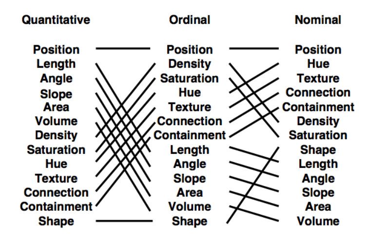
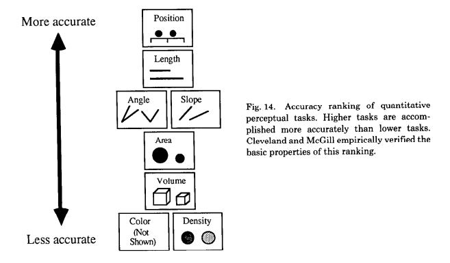

Bertin's Image Theory
PART ONE: Bertin
In 1967, Jacques Bertin published The Semiology of Graphics, which laid much of groundwork for how to categorized data and the visual representation of data.
Visual Variables
Bertin explains several ways that marks can be affected to describe the data that they represent. He calls them visual variables, we’ve called these attributes.
| Name | Description | Variable Type |
|---|---|---|
| Position | x, y, or z dimension | Planar |
| Size | Length, area, repetition | Retinal |
| Shape | Circle, square, etc | Retinal |
| Brightness (a.k.a. Value) | Light to dark | Retinal |
| Color | Hue (green, blue, red, etc) | Retinal |
| Orientation | Alignment | Retinal |
| Texture | Pattern (not popular now these days) | Retinal |
Planar variables/attributes exist in space, while retinal exist in your eye. Bertin also defines four ways that marks can be related to each other.
Characteristics of a visual variable
| Name | Definition | Example |
|---|---|---|
| Associative | If a mark is different in this attribute, it can be picked out | |
| Selective | If marks are similar in this attribute, they can be grouped into a family | Male/female |
| Ordered | The marks can be judged as ordered | More/fewer, higher/lower, first place/third place |
| Quantitative | The marks are perceived as numerically related to one another/proportional to one another | You can tell one is 2x as big as another WITHOUT a legend |
Associative is only a little different than selective, it just means “in a very complicated visualization, will this grouping be recognized immediately?”
Quantitative is basically a more descriptive version of ordered.
Which attributes can do what?
| Variable | Associative? | Selective? | Ordered? | Quantitative? |
|---|---|---|---|---|
| Planar | Yes | Yes | Yes | Yes |
| Size | Yes | Yes | Yes | |
| Brightness | Yes | Yes | ||
| Texture | Yes | Yes | Yes | |
| Color | Yes | Yes | ||
| Orientation | Yes | Yes | ||
| Shape | Yes | Sometimes |
As you can see, planar/position is clearly the best, because it shows you everthing. But you can’t put everything on a scatterplot because sometimes you need 3 dimensions, not just two! (e.g. height vs. weight, height vs. weight vs. gender)
If we wanted to simplify to join with data types, we could do this…
| Variable | Nominal | Ordinal | Quantitative |
|---|---|---|---|
| Planar | Yes | Yes | Yes |
| Size | Probably not | Yes | Yes |
| Brightness | Probably not | Yes | Somewhat |
| Texture | Yes | Somewhat | |
| Color | Yes | Probably not | |
| Orientation | Yes | Arguable | |
| Shape | Yes |
Bertin believes you can only show three variables at once! And all sorts of other things, too.
PART TWO: Mackinlay
But then Jock Mackinlay said, oh this is fine, let’s add some more and rank them!

The best part about this is he splits up length and size, which Bertin put together. And if that wasn’t enough, let’s see which ones are better for accuracy!

Mackinlay’s Principle of Importance Ordering: Encode more important information more effectively.